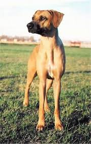
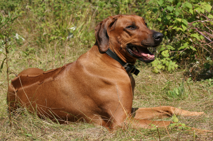

Rhodesian Ridgeback

Here are some reasons why you should adopt a Rhodesian Ridgeback
1. Rhodesian Ridgebacks are very active if you're an active person then the rhodesian ridgeback is just the dog you need they have plenty of agility and stamina to keep up with your pace
2. Rhodesian Ridgebacks are family friendly dogs and are very playful they do not bark or howl at many things either
3. Rhodesian Ridgebacks do not shed much and over all not a messy dog whats so ever they're easy to clean and dry very fast
